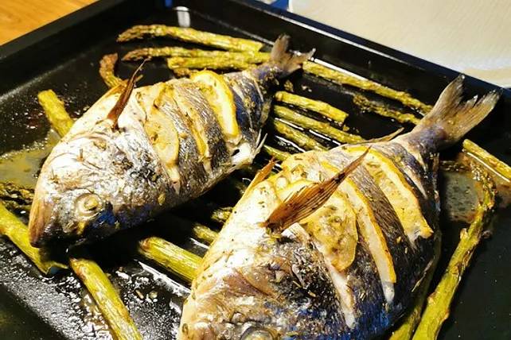

Utees Dorade al forno

Zutaten für 4 Portionen
- 4 große Dorade(n)
- 4 Zweig/e Rosmarin
- 8 Zweig/e Thymian
- 2 Zitrone(n) mit essbarer Schale
- 2 große Knoblauchzehe(n)
- Salz und Pfeffer
- 1,3 Prise(n) Pfeffer, weißer
- etwas Olivenöl
- evtl. Fleur de Sel
Zubereitung
|
|
Arbeitszeit ca. 10 Minuten |
|
|
Koch-/Backzeit ca. 25 Minuten |
|
|
Gesamtzeit ca. 35 Minuten |
- Ofen auf 200 °C vorheizen.
- Die Doraden waschen, evtl. noch anhaftende Schuppen entfernen,
trocken tupfen und auf jeder Seite fünf tiefe Einschnitte anbringen.
- Nach und nach etwas Wasser dazugeben und mit einem Schneebesen zu einem zähflüssigen Teig verrühren.
- Den Teig eine halbe Stunde ruhen lassen.
- Rosmarin und Thymian abstreifen und klein schneiden.
- Knoblauch feinblättrig schneiden.
- Zitrone in dünne Scheiben schneiden und Scheiben halbieren.
- Fisch innen salzen und pfeffern und mit Kräutern sowie den Knoblauchscheiben würzen.
- In die Einschnitte die halbierten Zitronenscheiben stecken, die restlichen Zitronenscheiben in den Bauch füllen.
- Die Dorade nun auch von außen mit Rosmarin, Thymian, Pfeffer und Salz würzen, mit dem Öl bestreichen und je nach Größe in 20 bis 25 Minuten im Ofen garen.
- Die Doraden sind gar, wenn sich die Rückenflosse leicht herausziehen lässt.
- Dazu passen Ciabatta, Baguette, aber auch mitgegarte und ebenfalls mit Thymian und Rosmarin gewürzte Kartoffelwedges.
- Wenn man die Haut nicht mitessen möchte, empfehle ich, das Fischfleisch mit ein wenig Fleur de Sel nachzuwürzen.